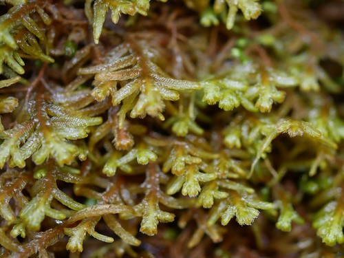

Lepicoleaceae
Lepicolea / Featherwort Family
Lepicoleaceae is a family of leafy liverworts containing the single genus Lepicolea. These often robust plants are highly distinctive due to their typically regular pinnate (feather-like) branching and their leaves and underleaves being deeply divided into narrow, often ciliate segments. The family has a primarily Southern Hemisphere distribution, often occurring in humid montane forests.
Overview
The Lepicoleaceae family, represented solely by the genus Lepicolea, comprises visually striking liverworts often referred to as "Featherworts". This name alludes to their most characteristic feature: highly regular, pinnate or bi-pinnate branching patterns that give the shoots a distinct feather-like appearance. Adding to this intricate look are the leaves and underleaves, which are both large and deeply dissected into 2-4 narrow, often hair-pointed or toothed segments.
These plants are typically medium-sized to large and can form extensive mats or tufts. They thrive in humid environments, commonly found growing as epiphytes on tree trunks and branches, or on rocks (epilithic) and soil banks within cool temperate rainforests and tropical montane cloud forests. Their distribution is predominantly Gondwanan, centered in the Southern Hemisphere (South America, Australasia, southern Africa), with some species extending into tropical mountains of the Northern Hemisphere.
Lepicoleaceae occupies its own suborder, Lepicoleineae, within the Jungermanniales (or Ptilidiales), highlighting its unique evolutionary position. Studying this family provides insights into the evolution of complex branching patterns and highly dissected leaf forms in liverworts, as well as biogeographical patterns linked to the ancient supercontinent Gondwana.
Quick Facts
- Scientific Name: Lepicoleaceae
- Common Name: Lepicolea Family / Featherwort Family
- Number of Genera: 1 (Lepicolea)
- Number of Species: Approximately 10-15
- Distribution: Primarily Southern Hemisphere (temperate & tropical montane), some N. Hemisphere tropics
- Evolutionary Group: Liverworts (Marchantiophyta) - Jungermanniopsida - Lepicoleineae
Key Characteristics
Gametophyte Form and Habit
Plants are medium to large, often robust, forming loose to dense tufts or mats, sometimes pendent. Color ranges from pale whitish-green or yellowish-green to brownish or reddish-tinged. Stems are creeping to ascending or pendent, and characteristically display highly regular pinnate or bi-pinnate branching (branches arising laterally in a feather-like pattern). Branching is predominantly of the Frullania-type.
Leaves and Underleaves
Leaves are inserted transversely or incubously, often asymmetric. They are deeply divided, typically more than halfway to the base, into 2-4 (commonly 2 or 4) narrow, lanceolate or subulate (awl-shaped) segments or lobes. These segments frequently have margins that are ciliate (fringed with hairs) or toothed. Underleaves are conspicuous, similar in size and form to the lateral leaves, and also deeply divided into 2-4 segments, contributing to the overall complex, somewhat bristly or feathery appearance of the shoot.
Rhizoids
Rhizoids are typically sparse and arise in tufts from the base of the underleaves.
Cellular Structure
Leaf cells are often thick-walled, particularly towards the base, usually with distinct, sometimes bulging trigones. Cell walls may be pigmented yellowish or brownish. The cuticle is sometimes papillose.
Reproductive Structures
Plants are consistently dioicous.
- Antheridia occur in the axils of modified bracts, forming intercalary spikes on stems or branches. Bracts often resemble smaller vegetative leaves.
- Archegonia are terminal on the main stem or leading branches, surrounded by several pairs of bracts and bracteoles that are larger than, but otherwise similar to, the vegetative leaves and underleaves.
- A well-developed perianth protects the developing sporophyte. It is long, cylindrical to fusiform, often deeply plicate (pleated), especially towards the contracted, ciliate or lobed mouth. Marsupia are absent.
Sporophytes and Spores
The sporophyte develops within the perianth. It features a foot, a long seta, and an ovoid capsule with a multi-layered wall. The capsule splits into four valves to release spores and elaters.
Field Identification
Identifying Lepicoleaceae relies heavily on recognizing the distinctive regular branching pattern and the complex, divided leaves and underleaves, typically in humid forest environments.
Primary Identification Features
- Branching Pattern: Highly regular, pinnate or bi-pinnate (feather-like) branching.
- Leaves and Underleaves: Both large and deeply divided into 2-4 narrow segments. Segments often appear ciliate or toothed.
- Appearance: Shoots often look complex, bristly, or "feathery" due to the divided appendages.
- Habit: Often medium to large plants forming tufts or mats, frequently epiphytic or on rocks.
- Habitat: Humid temperate or tropical montane forests, predominantly Southern Hemisphere.
Secondary Identification Features
- Color: Often pale green, yellowish, or brownish/reddish tinged.
- Leaf Insertion: Transverse to incubous.
- Cell Walls (Microscopic): Often thick-walled with trigones.
- Perianth: Long, terminal, pleated perianth (if fertile).
Seasonal Identification Tips
Lepicoleaceae gametophytes are perennial and identifiable year-round:
- Year-Round: The characteristic branching pattern and leaf/underleaf structure are always present.
- Wet Conditions: Plants appear more lush and easier to observe detail when hydrated.
- Reproductive Structures: Perianths may be visible at certain times, aiding identification. Sporophytes are less frequently observed.
Common Confusion Points
The regular pinnate branching and divided leaves help distinguish Lepicoleaceae, but confusion might occur with:
- Ptilidiaceae (Ptilidium): Also has pinnate branching and divided leaves/underleaves with ciliate margins. However, Ptilidium typically has succubous leaves and is primarily Northern Hemisphere temperate/boreal.
- Trichocoleaceae: Have highly divided leaves/underleaves, but segments are typically capillary (thread-like) and give a distinctly "woolly" texture. Branching may be less regular.
- Mastigophoraceae: Robust plants, sometimes pinnately branched, with divided underleaves, but lateral leaves are incubous and typically less deeply or differently divided.
- Some Lepidoziaceae: Certain genera have pinnate branching and divided leaves (e.g., Telaranea, Kurzia), but are usually much more delicate, often translucent green, and differ in cellular details and specific branching types.
Field Guide Quick Reference
Look For:
- Regular pinnate/bi-pinnate branching
- Leaves AND underleaves deeply cut into 2-4 narrow segments
- Segments often ciliate/toothed
- "Feathery" or bristly appearance
- Medium to large size, often epiphytic
- Humid forest habitat (esp. S. Hemisphere)
Key Distinctions:
- Regular pinnate branching (vs. irregular or dichotomous)
- Deeply divided leaves AND underleaves
- Narrow, often ciliate segments (vs. broader lobes or entire leaves)
- Transverse/incubous leaves (vs. succubous in Ptilidium)
- Absence of marsupium
Notable Examples
The family consists of the single genus Lepicolea:

Lepicolea ochroleuca
(No common name)
A common species in temperate Southern Hemisphere regions (e.g., New Zealand, Tasmania, southern South America). Forms robust, pale yellowish-green to brownish tufts, often epiphytic. Shows characteristic regular pinnate branching and leaves/underleaves divided into 2-4 ciliate segments.

Lepicolea rigida
(No common name)
Found in similar Southern Hemisphere locations, sometimes extending into tropical mountains. Often appears somewhat stiffer (as the name suggests) and may be more brownish. Exhibits the typical family characteristics of pinnate branching and divided appendages.

Lepicolea attenuata
(No common name)
A species found in tropical montane regions, including parts of Asia and the Americas. May show variation in robustness and segment details but retains the core family features of regular branching and dissected leaves/underleaves.
Phylogeny and Classification
Lepicoleaceae is placed within the liverwort division Marchantiophyta, class Jungermanniopsida, and order Jungermanniales. It constitutes its own distinct suborder, Lepicoleineae. Historically, it was sometimes associated with or placed within the order Ptilidiales, but current understanding, largely based on molecular data, integrates Ptilidiales within a broader Jungermanniales, with Lepicoleaceae forming a separate suborder.
The Lepicoleineae represents another distinct evolutionary lineage within the complex phylogeny of leafy liverworts, characterized by its unique combination of regular pinnate branching and highly dissected leaves and underleaves. Its predominantly Gondwanan distribution suggests ancient origins and diversification tied to the breakup of the southern supercontinent.
Position in Plant Phylogeny
- Kingdom: Plantae
- Clade: Embryophytes (Land Plants)
- Division: Marchantiophyta (Liverworts)
- Class: Jungermanniopsida
- Order: Jungermanniales
- Suborder: Lepicoleineae
- Family: Lepicoleaceae
Evolutionary Significance
Lepicoleaceae is significant for:
- Distinct Morphology: The combination of regular pinnate branching and highly dissected, similar leaves and underleaves is a unique evolutionary outcome.
- Phylogenetic Position: Represents a distinct suborder (Lepicoleineae), contributing to our understanding of the major lineages within Jungermanniales.
- Biogeography: Its predominantly Southern Hemisphere, Gondwanan distribution pattern provides clues about ancient plant geography.
- Ecological Role: Forms a noticeable component of epiphytic and epilithic bryophyte communities in specific humid forest types.